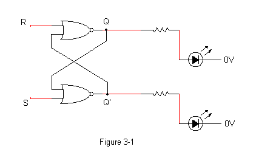
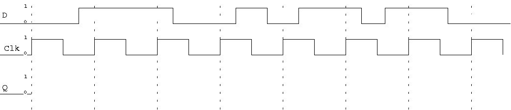
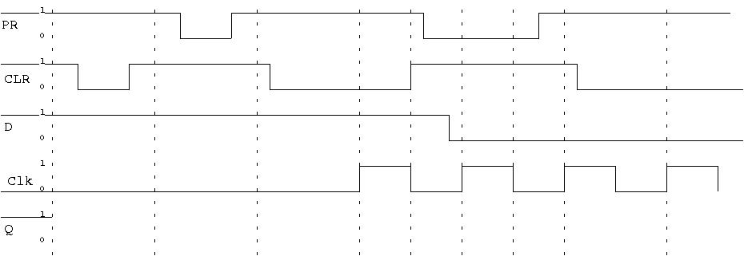
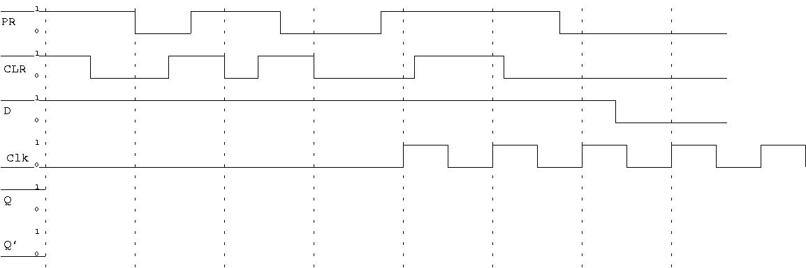
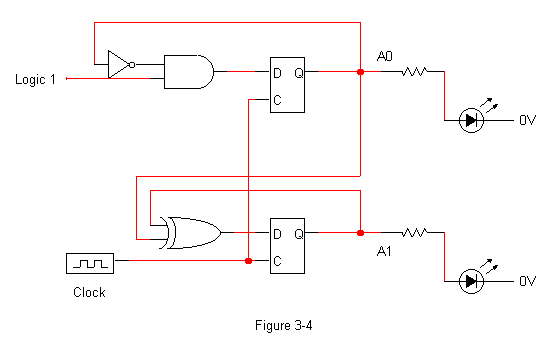

Author: Prof. Greg Wolffe.
Overview
The purpose of this lab is to provide a "hands-on" introduction to
modern technologies for storing digital data. The lab will
investigate basic storage device structure and function by building
latches and experimenting with flip-flops. These simple devices
will then be combined with combinatorial logic gates to construct
sequential circuits. Voila! A state machine is born.
- Chapters 2 and 3 in the Harris and Harris textbook. (Appendix B in Patterson and Hennessey.)
- The web page showing how to use switches.
- The web page showing pinouts.
- The video showing how to use breadboards.
Simple Storage Devices
The first and simplest storage device
we will consider is the S-R latch. It can be constructed using
relatively simple logic; for example, the version presented in lecture
used two NOR gates with feedback circuits. Figure 3-1 below
gives the logic diagram.

Important: Note that the pinout of a NOR gate integrated circuit
(74HC02) differs from the pinouts of the AND and NAND gate ICs used in
previous labs.

- Connect inputs
R and S to switches (either momentary or dip switches).
Remember that each switch needs a resistor!
- Connect both the Q and Q' output lines to LEDs.
Don't forget the resistors for each LED!
Hint: Use different colored
LEDs for the two outputs.
- Demonstrate your circuit to the instructor or lab assistant.
- Notice that, unlike the combinatorial circuits we have discussed
in class, the output of the S-R latch depends on both the inputs, and
the current state of the device. A characteristic table is
used to specify the output of the device in terms of both its input
and current state. Determine, by observing the state of the LEDs,
the characteristic table of the device.
| R |
S |
previous Q |
New Q |
New Q' |
| 0 |
0 |
0 |
|
|
| 0 |
0 |
1 |
|
|
| 0 |
1 |
0 |
|
|
| 0 |
1 |
1 |
|
|
| 1 |
0 |
0 |
|
|
| 1 |
0 |
1 |
|
|
| 1 |
1 |
0 |
|
|
| 1 |
1 |
1 |
|
|
- What happens to Q and Q' when both inputs are set to logic 1?
- Explain how the circuit produces the observed result when
R=1 and S=1. (In
other words write a couple paragraphs explaining why the output of
this circuit makes sense given the defined behavior of its
component gates when R=1 and S=1.)
- The book claims that setting both inputs to 1 produces an "indeterminate" result.
- Describe a specific sequence of input values for R and S that could lead to Q being in an indeterminate (or
random), but stable, state. (Hint: Consider what happens when R and S both change values "simultaneously".)
- Describe the random state and the cause of the randomness.
I'm going to be very particular about how this questions is written. You will probably want to have another group
read your answer to make sure it is clear. Note: I'm not looking for a description of any intermediate states. I'm
only interested in final, stable, states.
Flip-flops
As described in class, the D flip-flop is a useful device for storing
one bit of data. It does not suffer from the indeterminate state
observed in the S-R latch. The logic device that will be used in
this experiment is the 74HCT74, a dual D-type flip-flop with Set and
Reset and a positive-edge trigger. The "dual" means there are two
D flip-flops in the IC, the "Set and Reset" means that there are pins to
Set and Reset the device, and "positive-edge trigger" indicates that a
bit present on the D input will be latched into the flip-flop at the
leading edge of a clock pulse.
The pinout of the D flip-flop is very different from the gates used
previously. See Figure 3-3 below for the details of the
pinout. Power is connected across pins 7 and 14 as usual.
For flip-flop #1, pin 2 is the D (Data) input. The
outputs Q and Q' are at pins 5 and 6 respectively.
The Clock signal (CLK) is input to pin 3. Finally, pin 1
(labeled CLR) provides the Clear, or Reset function. Pin
4 (labeled PR) provides the Preset, or Set function.
Both the Set and Clear inputs are active-LOW, which means
they are in effect whenever a logic 0 is applied. In other words,
connecting Set to ground will instantly set the state of the flip-flop
to 1. No clock pulse is necessary to use set and reset. This entire
organization is repeated, using different pins, for flip-flop #2.

- Connect power to the chip as usual and connect LEDs to monitor
the Q and Q' outputs.
- Connect the Preset and Clear, and D pins to a DIP switch
using a "pull-down" (i.e., 0 when the DIP switch is "off")
setup. Remember, there is a page on the course web page
showing how to use switches.
- Test your DIP switch setup by using Preset and Clear to set Q
to 1, then 0.
- Connect the clock to a momentary switch using a "pull-down"
(i.e., 0 when the switch is up, and 1 when it is pressed)
configuration.
- Test to see that the clock and the "D" switch work as expected.
Show the operation of the D flip-flop by completing the timing diagrams
below: (Note: The diagrams below contain 8 vertical dotted lines.
If you see fewer than 8 such lines, your web browser truncated the diagram.)
- This first diagram shows a typical clocked usage of the flip
flop. Note that, for this diagram, PRE and CLR are always 1.

- This diagram shows typical preset / clear behavior. Note that
the clock remains at 0 for the first half of the diagram.

- This diagram shows what happens when preset and clear are both low at the same time.
The results of setting preset and clear to low at the same time are not defined, so the behavior may not be
consistent.

Creating a Sequential Circuit
This last experiment provides a good example of the way storage devices
and logic gates are used together to create a sequential circuit.
It uses a combination of feedback (the current state of a storage
device) together with combinatorial logic to create a device
implementing a useful function.
- Construct the circuit given in Figure 3-4 below:
- Remember to set PRE and CLR to 1.
- Use LEDs to monitor the Q outputs of the two flip-flops. (Use different colors.)
- Place the LED for A1 to the left of the LED for A0.
- Wire both clock inputs to a single momentary switch to synchronize
the flip-flops on the same rising clock pulse.
- Repeatedly apply Clock pulses to the circuit and observe
the two Q outputs until you have discovered the pattern.
- You may need to refer to the web page showing pinouts.
- Report your observations using a characteristic table..
- Based on your observations, what useful circuit have you
constructed? Hint: Make sure your LED for A1 is to the left of the LED
for A0.
- Demonstrate your circuit to the instructor or lab assistant.

Debugging
- Do all LEDs have resistors?
- Are all LED resistors less than 1000 Ohms?
- Are all chips inserted with the notch to the left?
- Is pin 14 of each chip wired to the positive power bus?
- Is pin 7 of each chip wired to the negative power bus?
- Are there any floating inputs?
- Does every switch have a resistor?
- Is every switch's resistor at least 1000 Ohms?
- Does every flip-flop input pin have a valid signal?
- Are PRE and CLR set to 1 (either hard-wired to 1, or configured to use a
switch that is currently turned "on")?
Updated Tuesday, 1 February 2022, 5:20 PM